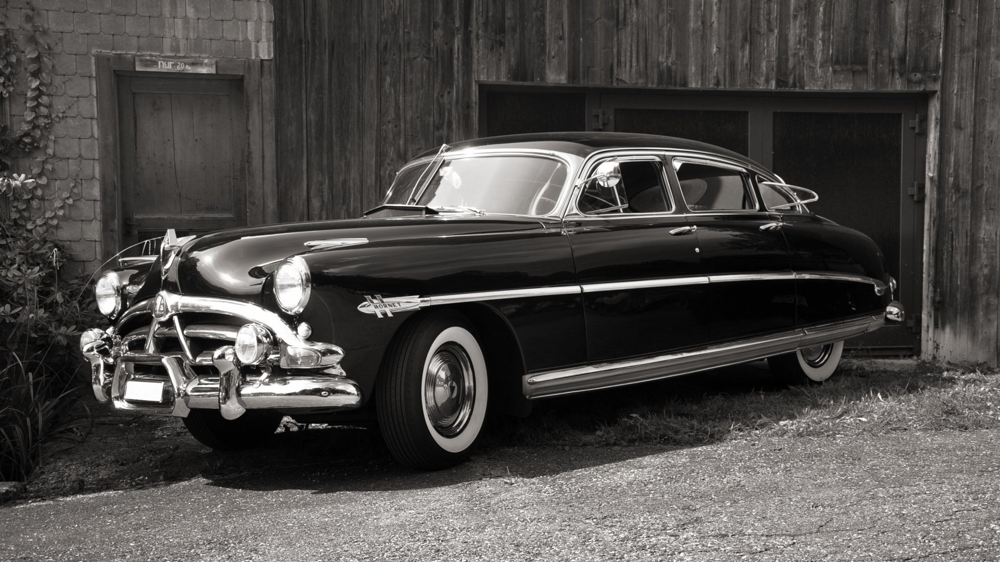

NASCAR ведет свою историю с 1948 г., когда Билл Франс-старший решил объединить проводившиеся на
юго-востоке США полулюбительские гонки на серийных машинах в один чемпионат. Ни одна автоспортивная
организация не взялась спонсировать это соревнование, и Франс основал санкционирующую организацию
сам. С 1949 г. NASCAR проводит три чемпионата — Strictly Stock (строго серийные), Modified
(модифицированные) и Convertible (открытые). Первоначально имел успех Modified, но постепенно на
первые роли вышел Strictly Stock, про который говорили, что в нём участвуют те же машины, что и
ездят по дорогам, и принять участие может любой желающий. Высокие призовые вознаграждения привлекали
именитых пилотов, низкие затраты позволяли проявить себя новичкам. Хороший выбор трасс и разумная
политика Ассоциации способствовали быстрому росту популярности. В 1959 г. появился специально
построенный для гонок NASCAR огромный автодром Daytona International Speedway, а проводившаяся на
нём гонка Daytona 500 стала звездой чемпионата.
Oдним из самых известных автомобилей НАСКАРа стал Hudson Hornet.
Hudson одерживал победы в 24 из 37 NASCAR Grand National races в 1952 году, 22 из 37 в 1953 году и
17 из 37 в 1954 году, что было значительным результатом для подобного автомобиля.